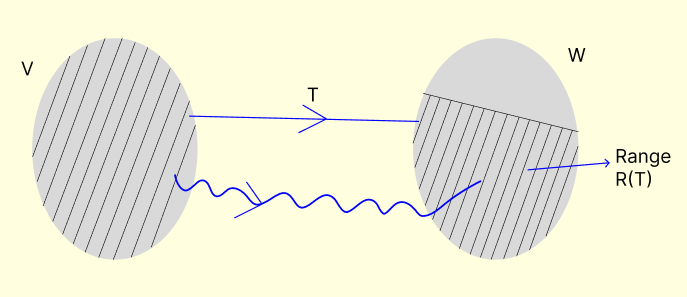
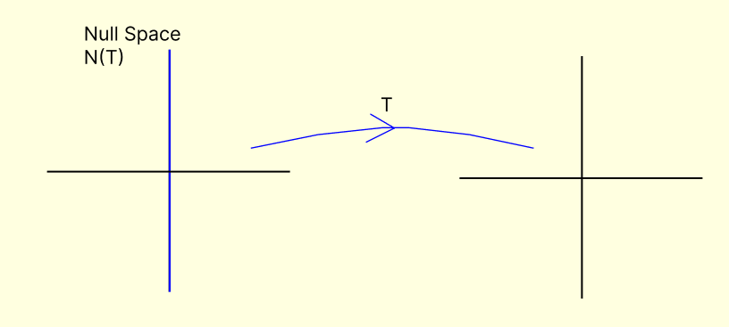

Null Space of Linear Transformation

Range of Linear Transformation
Example:
T: R2 → R2
T(x, y) = (x, 2x); x, y ∈ R2
1. Null Space ≡ N(T) = {(0, y) : y ∈ R}
Nullity = dim N(T) = 1
2. Range ≡ R(T) = {(x, 2x) : x ∈ R}
Rank T = dim R(T) = 1

Question: What will be the rank of the matrix of this linear transformation w.r.t. the standard bases?